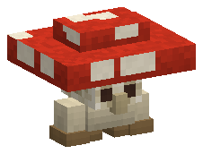

Industrious Golems is a NeoForge mod that adds work golems: golems that hold a job and produce resources directly, while you build the infrastructure around them (chests, hoppers, furnaces, crafters, minecarts) from ordinary vanilla blocks. Villagers, trading and iron golems are left exactly as they are.
 Hay GolemFarmer · A slow, patient scarecrow that tends your crops.
Hay GolemFarmer · A slow, patient scarecrow that tends your crops.
Mushroom GolemLumberjack · Fells trees and replants the grove as it goes. Terracotta GolemHerder · Shears, milks and keeps your pens at a sensible size.
Terracotta GolemHerder · Shears, milks and keeps your pens at a sensible size. Stone GolemMiner · Digs a mineshaft, one block at a time.
Stone GolemMiner · Digs a mineshaft, one block at a time.How golems work
Building one
Each golem is built from its own pattern of blocks with a carved pumpkin or jack o'lantern placed on top (see each golem's page). The pumpkin and all but the lowest block are consumed, the lowest block becomes the golem's chest, and the golem stands on it. You do not need a chest first: the pattern makes one. The golem is bound to that chest and starts dormant.
The chest
Each golem has its own 27-slot chest, which is its job site. It deposits what it produces there and restocks its supplies from it. The chest is craftable (a chest, the golem's old job block and its body block) so you can move one. Two of the same kind side by side join into a 54-slot double chest, which the golem uses just the same.
Copper chests. If there is a vanilla copper chest within 3 blocks of the golem's chest, the golem puts what it produces there instead, so copper golems can carry it on to wherever it belongs. What the golem also works with itself (seeds for the hay golem, saplings for the mushroom golem) still goes in its own chest, and with no copper chest nearby, or none with room, everything goes in its own chest as before.
Charge and offerings
Golems work bare-handed, day and night, but only while charged. A new golem is dormant until you give it something it craves: right-click it with the item. Each kind has eight offerings, uncommon finds from different biomes, structures and mobs, and it craves one at a time. One offering is worth 45 minutes of work; a golem stores two. The more golems you run, the more offerings you need, which means going out exploring.
One stack at a time
A golem has no inventory. It breaks a block, shears or milks, and the result drops in the world as it would for a player. It picks up one stack in its hand, carries it to its chest and goes back for the next. If more of the same item lies about it collects that first, up to a full stack, before heading to the chest. Supplies (seeds, saplings, buckets, feed) come out of the chest the same way.
The golems


About this wiki
The source and issue tracker are on GitHub. Item links go to the Minecraft Wiki.